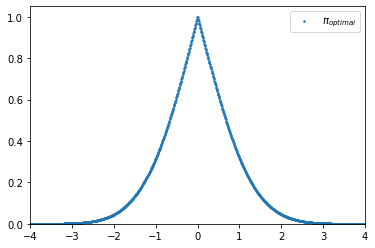
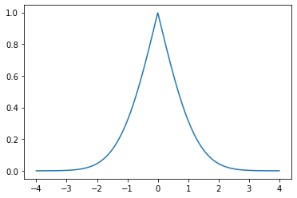
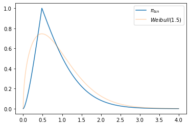

DistToPi¶
- class floulib.DistToPi(dist)¶
Bases:
objectThis class contains methods to transform probability distributions into possibility distributions.
- __init__(dist)¶
Constructor
- Parameters:
dist – The probability distribution.
- Return type:
None.
Example
>>> from floulib import DistToPi >>> import numpy as np >>> from scipy.stats import norm >>> mean = 0 >>> sigma = 1 >>> normal_dist = norm(mean, sigma) >>> x = np.linspace(mean - 4*sigma, mean + 4*sigma, 1000) >>> pi_opt = DistToPi(normal_dist) >>> pi_opt(x).plot(label='$\pi_{optimal}$')
- dpi(x)¶
Computes the optimal transformation of a unimodal symmetric probability distribution.
This method can be used as an interface with other libraries.
- Parameters:
x (numpy.ndarray) – The array of points.
- Returns:
The optimal possinility distribution.
- Return type:
numpy.ndarray
Example
>>> from floulib import DistToPi >>> import numpy as np >>> from scipy.stats import norm >>> import matplotlib.pyplot as plt >>> mean = 0 >>> sigma = 1 >>> normal_dist = norm(mean, sigma) >>> x = np.linspace(mean - 4*sigma, mean + 4*sigma, 1000) >>> fig, ax = plt.subplots() >>> ax.plot(x, DistToPi(normal_dist).dpi(x))
- membership(x, m=None)¶
Computes the grade of membership for x.
- Parameters:
x (float) – Point where the grade of membership is computed.
m (TYPE, optional) –
- The mode of the distrubution. The default is None.
If m is None, the optimal transform is applied (see
DistToPi.dpi()).otherwise the tsn transformation is applied (see
DistToPi.tsn()).
- Returns:
Grade of membership.
- Return type:
float
Example
Membership is computed with the optimal transformation.
>>> from floulib import DistToPi >>> from scipy.stats import norm >>> mean = 0 >>> sigma = 1 >>> normal_dist = norm(mean, sigma) >>> print(DistToPi(normal_dist).membership(1.0)) 0.31731050786291415
Membership is computed with the tsn transformation since Weilbull is not symetric.
>>> from floulib import DistToPi >>> from scipy.stats import weibull_min >>> c = 1.5 >>> mode = ((c-1.0)/c)**(1/c) >>> weibull_dist = weibull_min(c) >>> print(DistToPi(weibull_dist).membership(1.0, mode)) 0.513417119032592
- tsn(x, m)¶
Computes the tsn (two-side normalized) transformation of a unimodal symmetric probability distribution.
This method can be used as an interface with other libraries.
- Parameters:
x (numpy.ndarray) – The array of points.
m (float) – The mode used for the transformation.
- Returns:
The tsn possibility distribution.
- Return type:
numpy.ndarray
Example
>>> from floulib import DistToPi >>> import numpy as np >>> from scipy.stats import weibull_min >>> import matplotlib.pyplot as plt >>> c = 1.5 >>> mode = ((c-1.0)/c)**(1/c) >>> weibull_dist = weibull_min(c) >>> x = np.linspace(0, 4, 1000) >>> fig, ax = plt.subplots() >>> ax.plot(x, DistToPi(weibull_dist).tsn(x, mode), label = '$\pi_{tsn}$') >>> ax.plot(x, weibull_dist.pdf(x), label = '$Weibull(1.5)$', alpha = 0.3) >>> ax.legend()
- __call__(x, m=None)¶
Special method to transform the probabilty distribution possibility into a discrete possibility distribution. .
- Parameters:
x (numpy.ndarray) – The universe of discourse on which the transformation is performed..
m (float, optional) –
- The mode of the distrubution. The default is None.
If m is None, the optimal transform is applied (see
DistToPi.dpi()).otherwise the tsn transformation is applied (see
DistToPi.tsn()).
- Raises:
TypeError – Raised if the parameter is not an instance of numpy.ndarray.
- Returns:
The Discrete fuzzy subsets.
- Return type: